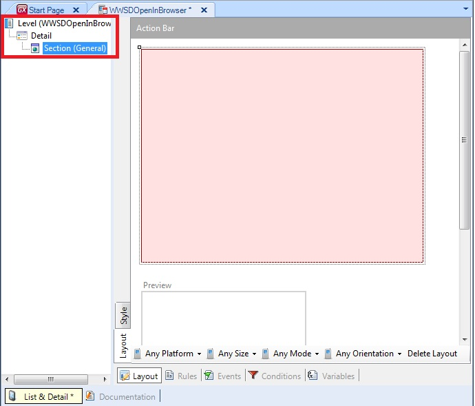
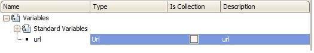
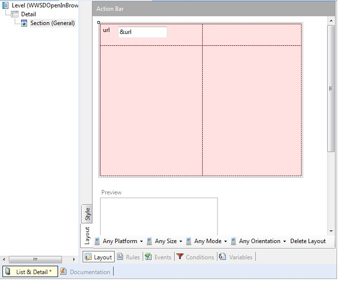
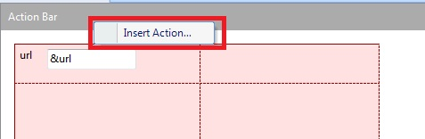
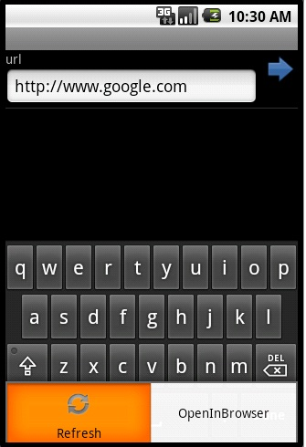
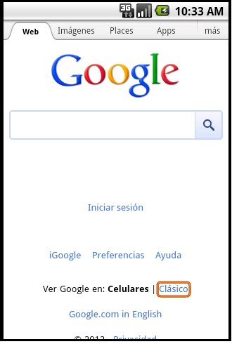
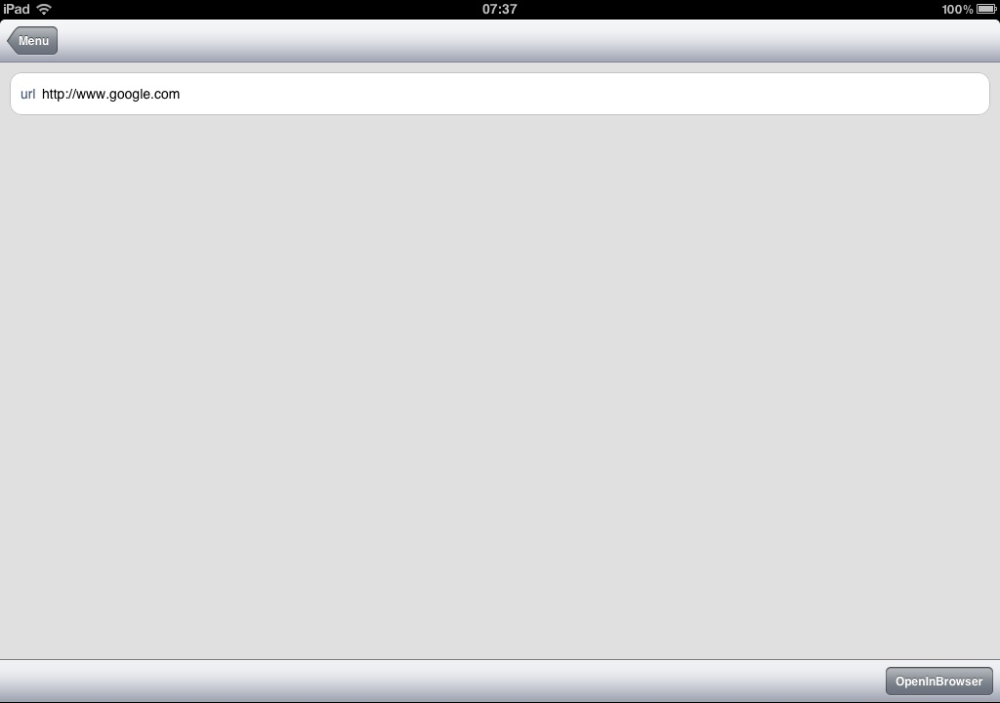
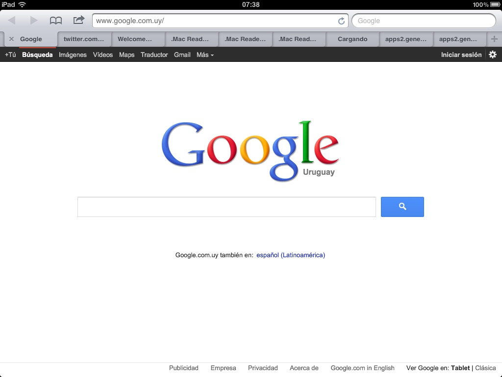

There are two ways in which a web page can be opened from your Smat Devices Applications. The first, and recommended one, is the Link Command and the second is the "OpenInBrowser" method available from Interop's API. Here we focus on a simple example on how to use the OpenInBrowser method, which follows the same aims as the Link Command as told before. This tutorial is a simple and quick guide for developers that want to use this method in their smart devices applications. In this tutorial we are going to open in a browser an URL inserted by the user. 1. First step is to create a new Work With for Smart Devices object, delete its List node and create a Detail node, it should be as follows:  2. Define a variable of URL type and add it to the layout:   3. Define a new action 'OpenInBrowser' to the Action panel:  Event 'OpenInBrowser' Interop.OpenInBrowser(&url) EndEvent All done! now hit f5 and see the results. ExamplesAndroid:   iOS:  
|
| Backlinks |
| Interop external object |
| WebBrowser external object |